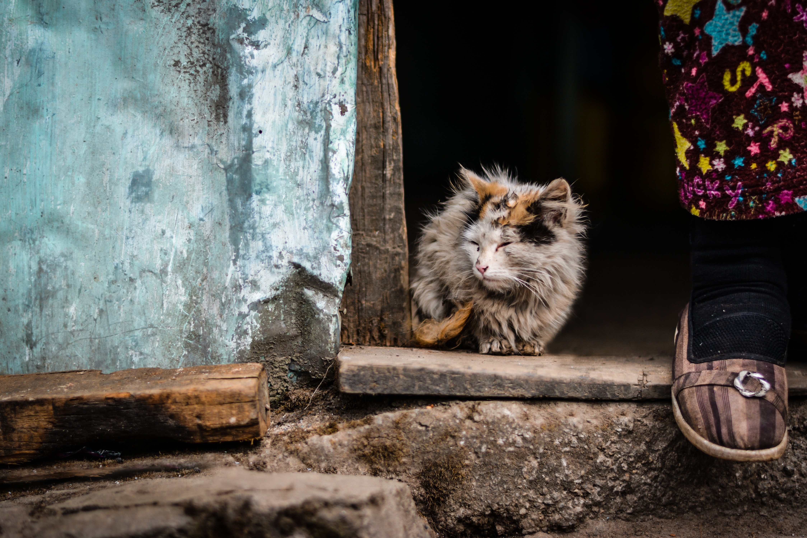

Breaking news
Post quorum necem nihilo lenius ferociens Gallus ut leo cadaveribus pastus multa huius modi scrutabatur. quae singula narrare non refert, me professione modum, quod evitandum est, excedamus. Circa hos dies Lollianus primae lanuginis adulescens, Lampadi filius ex praefecto, exploratius causam Maximino spectante, convictus codicem noxiarum artium nondum per aetatem firmato consilio descripsisse, exulque mittendus, ut sperabatur, patris inpulsu provocavit ad principem, et iussus ad eius comitatum duci, de fumo, ut aiunt, in flammam traditus Phalangio Baeticae consulari cecidit funesti carnificis manu.
Incroyable
Post quorum necem nihilo lenius ferociens Gallus ut leo cadaveribus pastus multa huius modi scrutabatur. quae singula narrare non refert, me professione modum, quod evitandum est, excedamus. Circa hos dies Lollianus primae lanuginis adulescens, Lampadi filius ex praefecto, exploratius causam Maximino spectante, convictus codicem noxiarum artium nondum per aetatem firmato consilio descripsisse, exulque mittendus, ut sperabatur, patris inpulsu provocavit ad principem, et iussus ad eius comitatum duci, de fumo, ut aiunt, in flammam traditus Phalangio Baeticae consulari cecidit funesti carnificis manu.

Cet article va vous étonner
Post quorum necem nihilo lenius ferociens Gallus ut leo cadaveribus pastus multa huius modi scrutabatur. quae singula narrare non refert, me professione modum, quod evitandum est, excedamus. Circa hos dies Lollianus primae lanuginis adulescens, Lampadi filius ex praefecto, exploratius causam Maximino spectante, convictus codicem noxiarum artium nondum per aetatem firmato consilio descripsisse, exulque mittendus, ut sperabatur, patris inpulsu provocavit ad principem, et iussus ad eius comitatum duci, de fumo, ut aiunt, in flammam traditus Phalangio Baeticae consulari cecidit funesti carnificis manu.

- Professeur 14
- Etudiant 6
- Autres